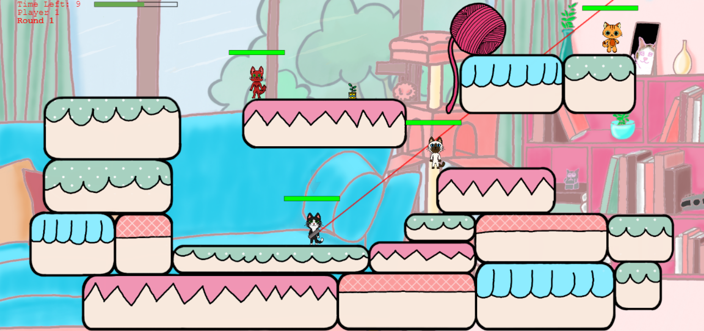

Lasst die KATERstrophe beginnen!
Ein Team aus erst drei, später vier Studierenden des Studienganges Bachelor Media-Engineering an der Technischen Hochschule Nürnberg Ohm hat sich dazu entschlossen, ein von der Spielereihe „Worms“ (Team 17) inspiriertes online Multiplayer-Web-Spiel zu entwickeln. Dabei arbeiteten sie mit dem Framework „Phaser“, welches sich beim Programmieren von 2D-Games als sehr nützlich bewährt hat. Alle Grafiken in CrazyCats wurden vom Team selbst gezeichnet.
Die Entwickler-Katzen
Laura
Diese Mieze bin ich: Ein nerviger Mini-Boss
Sarah
Unser nettes Programmiertalent-Kätzchen
Isabella
Die Design-Talent und Entwickler-Katze
Göki
Unser Server-Programmier-Kater, neu adoptiert
Entstehung
Da wir ein Spiel schaffen wollten, das allen von uns gefällt, suchten wir nach einem gemeinsamen Interesse und wurden fündig: Katzen. Wer mag sie nicht, diese geheimnisvollen, flauschigen Wesen? In einem Moment niedlich, im nächsten zerstören sie etwas. Diese Einstellung wollten wir auch unserem Spiel geben. Stets im süßen, bunten Stil gehalten und doch Action und Explosionen.
Als Erstes programmierten wir das Grundkonzept und hatten viel Gestaltungsarbeit, an der jedes Teammitglied teilgenommen hat. Später trafen auf uns Herausforderungen, wie das Spiel pixelbasiert zu machen, die Spieleumgebung zerstörbar zu machen, das Phasensystem, weil das Game rundenbasiert ist, und natürlich, das Ganze online zu machen. Wir danken vielmals unserem Professor Hopf, der uns geduldig und lehrreich unterstützt hat!
Steuerung
Laufen und Springen Sie mit den Pfeiltasten oder W/A/D. Wechseln Sie die Waffe mit der Pfeiltaste nach unten oder S. Zielen Sie durch Bewegen der Maus und schießen Sie mit einem Mausklick oder mithilfe der Leertaste. Hierbei reguliert die Druckdauer je nach Waffe die Stärke oder Länge des Schusses.
Social Media
Folge uns auf Instagram! Mit deiner Hilfe ist der Sieg PAW-ssible!